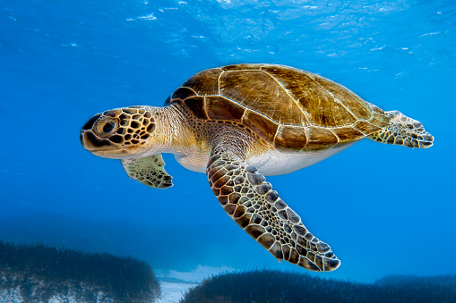
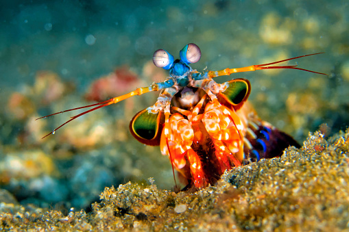
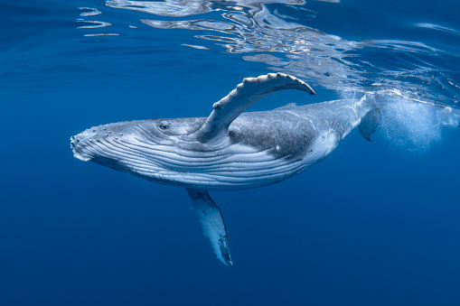
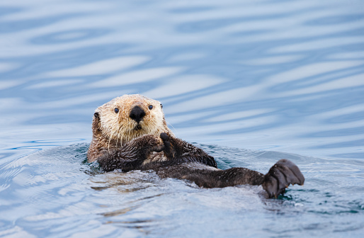
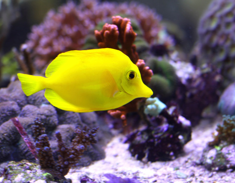
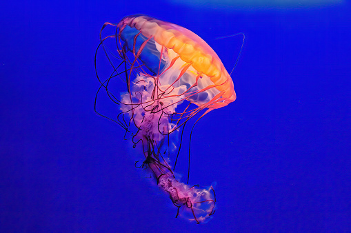

Endangered
Green Sea Turtle
Lifespan: 80 Years
Habitat: Tropical waters aorund the equator
Did You Know?: Green Sea Turtles Can Typically Weight 350-400 pounds
and are becoming endangered
primarily due to unsafe
egg-harvesting environemmnts

Mantis Shrimp
Lifespan: 3-6 Years
Diet: Fish, Crabs and Other Shrimp
Did You Know?: Although not endangered, the Mantis shrimp equips powerful
'dactyl clubs' which are used
for defense, these clubs can emmit over 1500
Newtons of force, which is enough to split a human
thumb!

Humpback Whale
Size: Up to 60Ft
Diet: Krill and Small Fish (ALmost 3000lb/1.4 Metric Tons)
Did You Know?: Male Humpback Whales Create and Sing
songs using special vocal sacs in their throat.
These songs can previously been heard from up to 20 miles away!

Endangered
Sea Otter
Lifespan: 15-20 Years
Fun Fact: Sea otter pups are born with buoyant fur that
does not allow them to sink. They float like
corks on top of the water unable to dive and therefore, are completely dependent on the mother sea otter.
Did You Know?: Sadly, these cute creatures are facing endangerment
due to increased human imapct on
their habitats. This includes water pollution, habitat destruction, and sadly, hunting.

THIS WEEKS WINNER!
Yellow Tang
Latin Name: Zebrasoma flavescens
Habitat: Tropical reefs aorund the Hawaiian Islands and Cost of Florida
Did You Know?: Our Spotlight Winner this week and a fan favourite recognised from the Disney classic
'Finding Nemo', these vibrant fish are known for helping our other spotlioght species, the Sea Turtle to help
keep their shells fresh and clean of Algae!

Box Jellyfish
Lifespan: 3 Months
Diet: Small Fish and Crustaceans
Did You Know?: With a short lifespan, the box jellyfish is known for having extremely powerful venom stored
in its tentacles, which it uses to kill its prey. These jellyfish actually comprise of 95% water, however if
they do not have an adequate food source, they will shrink up to 30% of their body size!